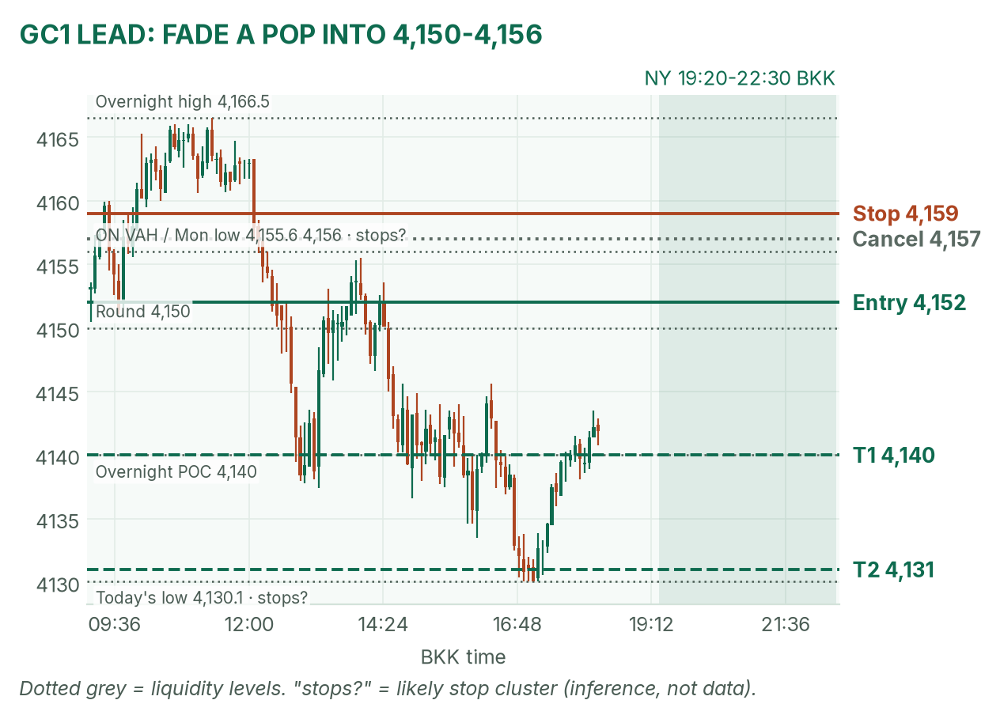
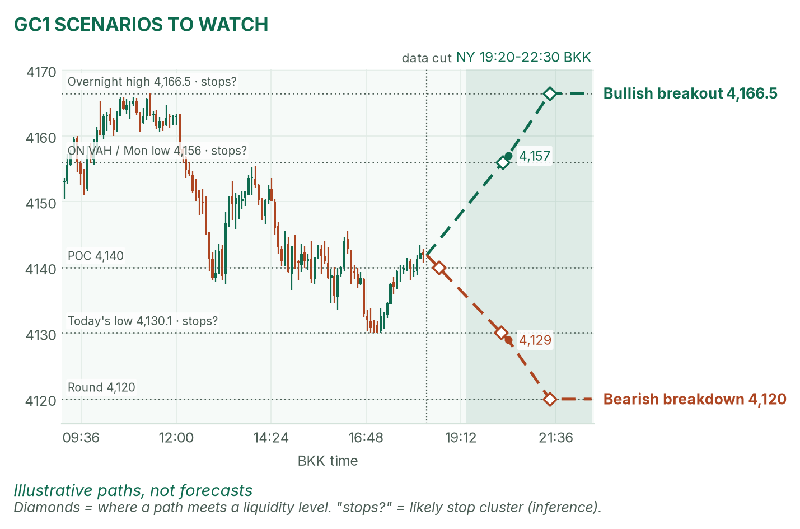
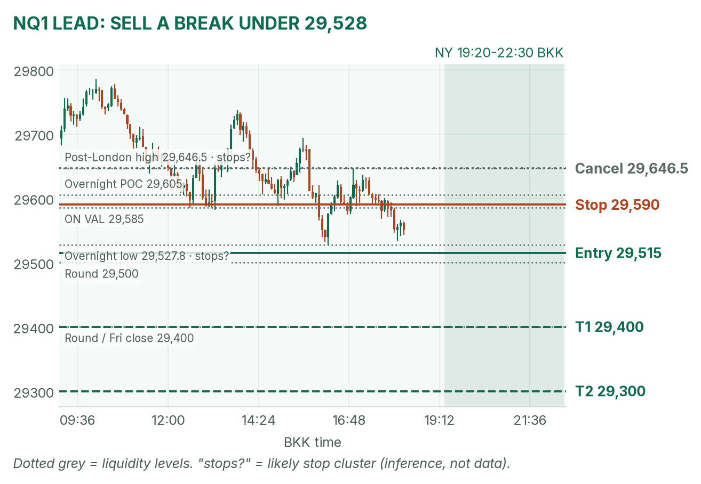
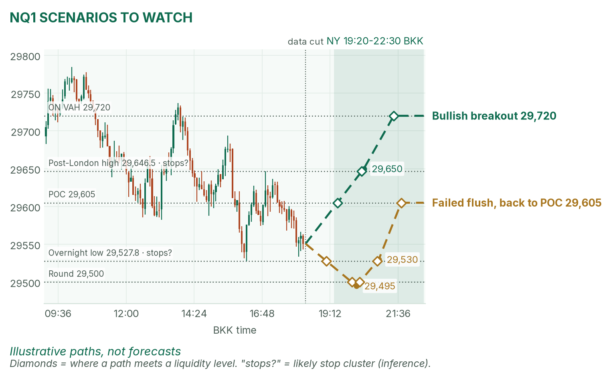

Gold lost Monday's floor. Nasdaq is leaning on its overnight low.
Window 19:20–22:30 BKK. Data cut 18:20 BKK: GC 4,141.9, NQ 29,550.75 (TopstepX Z26). Levels only. Ideas, not advice.
Summary
GC: sell a pop into 4,150–4,156. Entry 4,152, stop 4,159, targets 4,140 and 4,131. About 45%.
NQ: sell a 5-minute close below 29,528 after 20:35. Stop 29,590, targets 29,400 and 29,300. About 38%.
US housing starts at 19:30 and pending home sales at 21:00 sit inside the window. Stand aside 19:25–19:32 and 20:55–21:02.
Flat by 22:30, no matter what.
The market story
On Monday the 10-year yield climbed to about 5.14% while stocks rose. Yields rose, so bond prices fell, and gold's opportunity cost (the interest you give up holding metal) went up. This morning it is 5.12%. When yields and stocks rise together, the worry is inflation, not a slowdown.
Gold is down 0.44% since Monday's close and trades under Monday's low (4,155.6), both 4-hour averages (4,171 and 4,180) and the 20-day (4,210). It hit 4,130.1 at 16:55 and bounced to its overnight POC (busiest price), 4,140. Nasdaq is down 0.65%, below April's 29,638.5 line, and is sitting just over its overnight low, 29,527.75, under every higher-timeframe average. Both trends point down; the plan is to sell strength in gold and weakness in Nasdaq.
News (BKK)
Time
Event
Forecast
Prior
Read
Before 20:30
Earnings: GE Aerospace, GM, RTX, 3M, Northrop
–
–
Mood check, mostly non-tech.
19:30
US housing starts / building permits (Sep)
1.31M / 1.40M
1.275M / 1.394M
Hot: yields up, a drag on GC and NQ. Cold: the reverse. Usually small.
20:30
US cash open
–
–
The NQ opening range forms 20:30–20:35.
21:00
US pending home sales (Sep)
not found
not found
Low impact.
No-trade zones: 19:25–19:32 and 20:55–21:02. The Fed calendar shows no speakers today.
Levels to watch
Level
GC
NQ
Overnight high / low
4,166.5 / 4,130.1
29,803.5 / 29,527.75
Overnight POC
4,140
29,605
Overnight value area (where 70% of volume traded)
4,137–4,156
29,585–29,720
High since London's first two hours
4,145.6
29,646.5
Monday high / low
4,211.2 / 4,155.6
29,983.5 / 29,226
Monday POC
4,197
29,770
Typical window range (median / 80th pct, 20 days)
39 / 60 pts
292 / 377 pts
Gold (GC1)
Bias: bearish. Every timeframe is down, and Monday's low and the overnight value-area high stack at 4,155–4,156, a ceiling London already sold once today.
The trade: sell the pop into the ceiling
Entry
4,150–4,153 (plan 4,152), after the COMEX opening range forms: a push up into the ceiling, then a 5m close back below 4,152
Stop
4,159: above the 4,155.6–4,156 stack and the stops likely parked over it (an inference)
Targets
1R partial 4,145 · T1 4,140, the POC (1.71R) · T2 4,131, just above today's low (3.0R)
Cancel
A 15m close above 4,157 before entry, or no push to 4,150 by 21:30
Probability
~45%, an estimate. Basis: NY gold opening ranges mostly failed back to the POC in my Aug–Oct study (not significant); T1 is under a third of a typical window.
Why: a tight stop behind a proven ceiling, with the trend. No pop to 4,150, no trade; don't sell down here at the POC. April agrees: she said gold needed to hold 4,151 and a break opens 4,100.

GC 5-minute bars to 18:20 BKK, window shaded. The short leans on the 4,150–4,156 ceiling.

The other two setups, illustrative only.
Scenarios to watch
Bullish breakout: two 15m closes above 4,157. Aims for the overnight high, 4,166.5.
Bearish breakdown: a 15m close below 4,130. Aims for 4,120, the round number.
Nasdaq (NQ1)
Bias: bearish. Monday's bounce faded from 29,983.5, and price is pressing the overnight low, where stops likely sit (an inference).
The trade: bearish range breakout
Entry
29,510–29,520 (plan 29,515), on a 5m close below both the 20:30–20:35 range low and 29,528
Stop
29,590: back above the overnight value-area low (29,585)
Targets
1R partial 29,440 · T1 29,400, round number near Friday's close (1.53R) · T2 29,300 (2.87R)
Cancel
A 5m close above 29,646.5 before entry, or no trigger by 22:00
Probability
~38%, an estimate. Basis: NQ 5-minute range breakouts averaged +0.37R in my study (31 sessions, not significant); T1 is under half a typical window.
Why: with the trend. After 21:00, stay short only below VWAP (the volume-weighted average price). If the open rips back over 29,646.5, stand down. April agrees: she said Nasdaq needed the open to defend 29,638.5, and it already slipped under.

NQ 5-minute bars to 18:20 BKK. The trade needs the 29,528 overnight low to give way.

Breakout and failed-flush paths, illustrative only.
Scenarios to watch
Bullish breakout: a 5m close above 29,650 after 20:35. Aims for the overnight value-area high, 29,720.
Failed flush: a poke under 29,500 that closes back above 29,530 within 15 minutes. Aims for the POC, 29,605.
6E (not traded in NY): 1.12375, near today's low of 1.1230 and April's 1.1229 floor.
Before you click
ORB bases. GC NY: the 19:20 COMEX range ends at the first candle under half the average volume of the first two; fade to POC. NQ: 20:30–20:35 range, trade breakouts.
Checklist. 1) Room to today's max loss? 2) Within daily rules? 3) No release within 30 minutes? 4) Agrees with the bias? 5) At a marked level? 6) Setup tagged? 7) Entry, stop, 1R partial, target set? 8) Calm, not chasing?
Reset (60 seconds). Hands off the mouse. Breathe in 4, hold 4, out 6, five times. Name the feeling in one word. Say the plan aloud. "Eager" or "frustrated"? Wait 5 minutes.
TopstepX Z26 bars, read-only; overnight starts 05:00 BKK. Calendar: Reuters poll via Interactive Brokers, Wrightson ICAP, Federal Reserve calendar, Earnings Whispers via April. Yields: April's pre-London brief (her pre-NY brief was not out at the data cut).